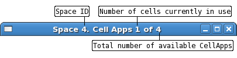
The title bar of the Space window provides constantly updating information regarding the state of the space and the server.
Cell Information
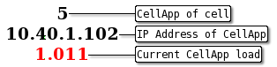
For each cell within the space, the above information is displayed. This allows a constant update as to the load of the CellApps managing a space and gives live feedback as to how the load balancing is responding in response to events. This information can be extremely useful when combined with the entity view illustrated below that demonstrates entity density within a space.
Main Space Display
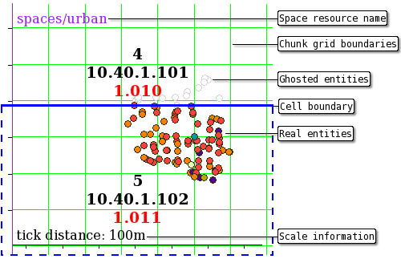
The main space display contains a lot of constantly updating information about the space. The image above illustrates the core information that is visible by default.
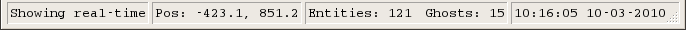
The status bar is located at the bottom of the Space windows. It provides constantly updating information about the active space, cell and entities.
Action Notification
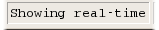
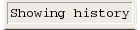
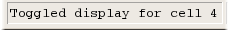
There are a number of state changes that can occur while interacting with the space window. As some of the actions may be slightly delayed due to latency when connecting to a remote SVLogger process, or simply non-obvious due to a new user, the action notification area presents a notification of the last major interaction the user performed within the space window.
Cursor Position
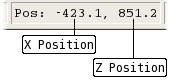
While moving the mouse around the Space window, this position will update with the current cursor position to assist in identifying the location of entities.
Entity Count
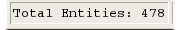
When no cell is selected in a space view, the total number of entities in the space is displayed. This allows quick context as to the density of the space.
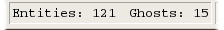
Selecting a cell refines the entity count to display the number of entities that exist within the space. The image above illustrates there are 121 real entities within the selected cell and 15 entities that have been ghosted from the surrounding cells.
Currently Viewing Log Time
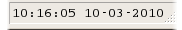
When navigating through historic space logs (using the arrow keys to navigate time), this status area displays the time currently being displayed. This can assist in giving context when attempting to identify key events within a space.